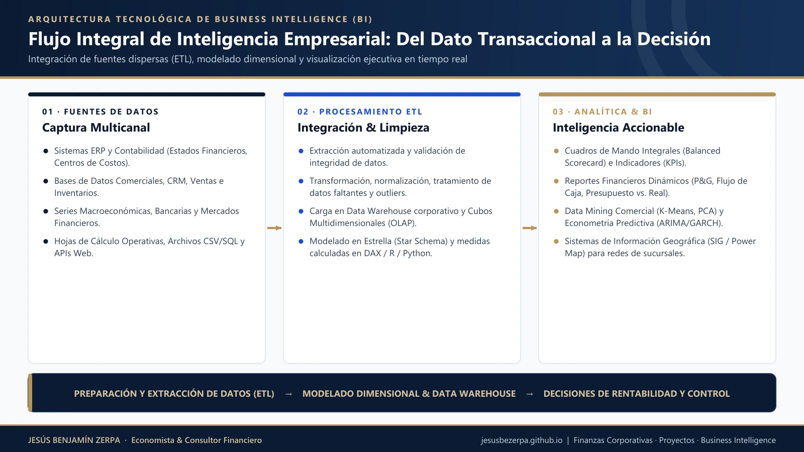
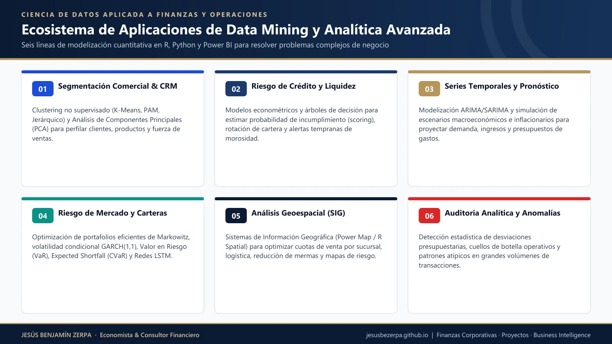
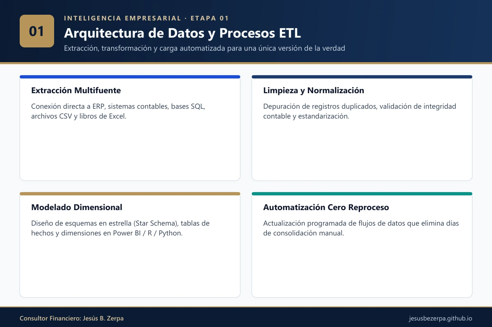
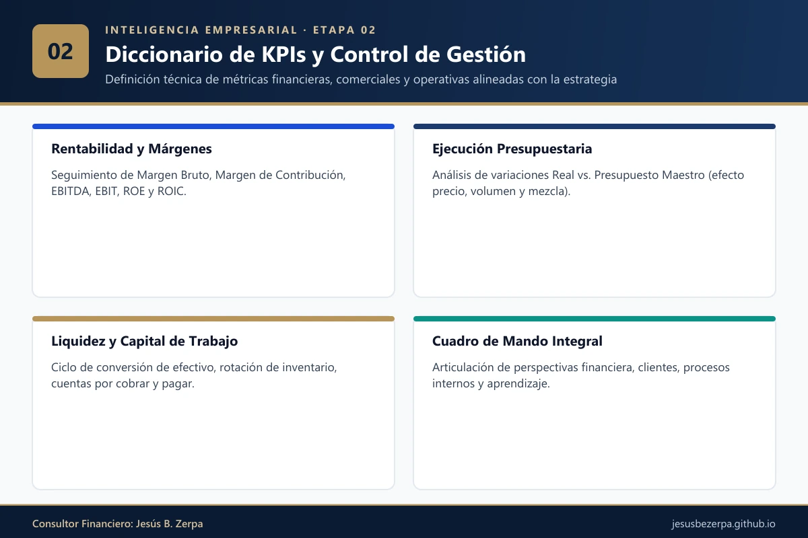
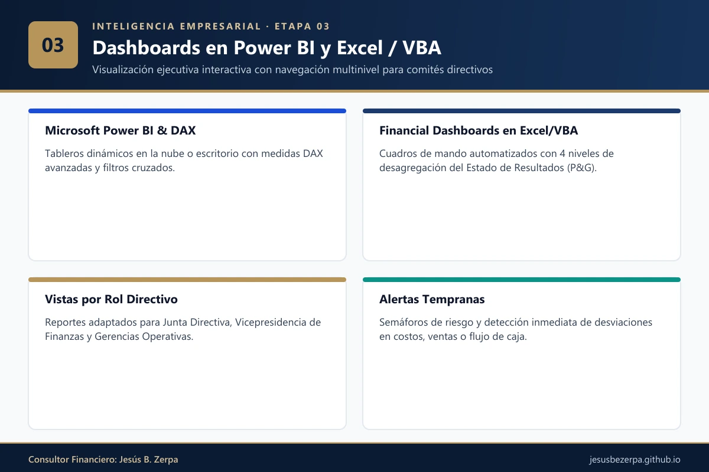
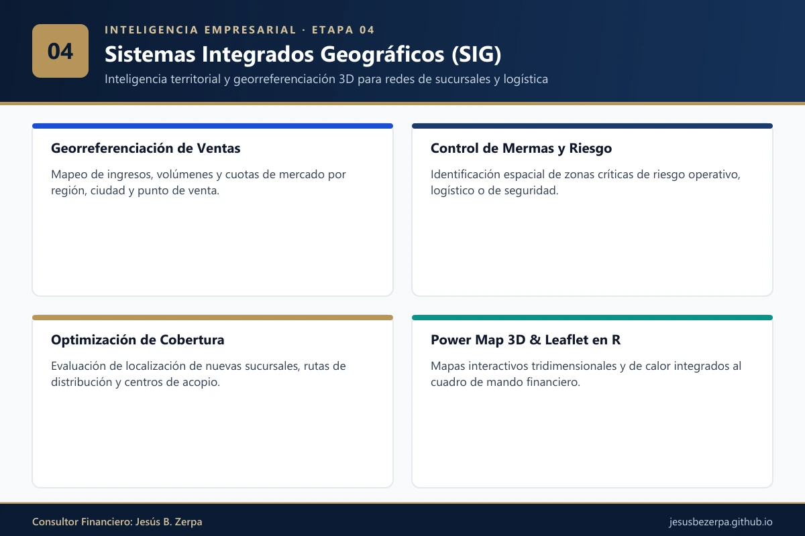
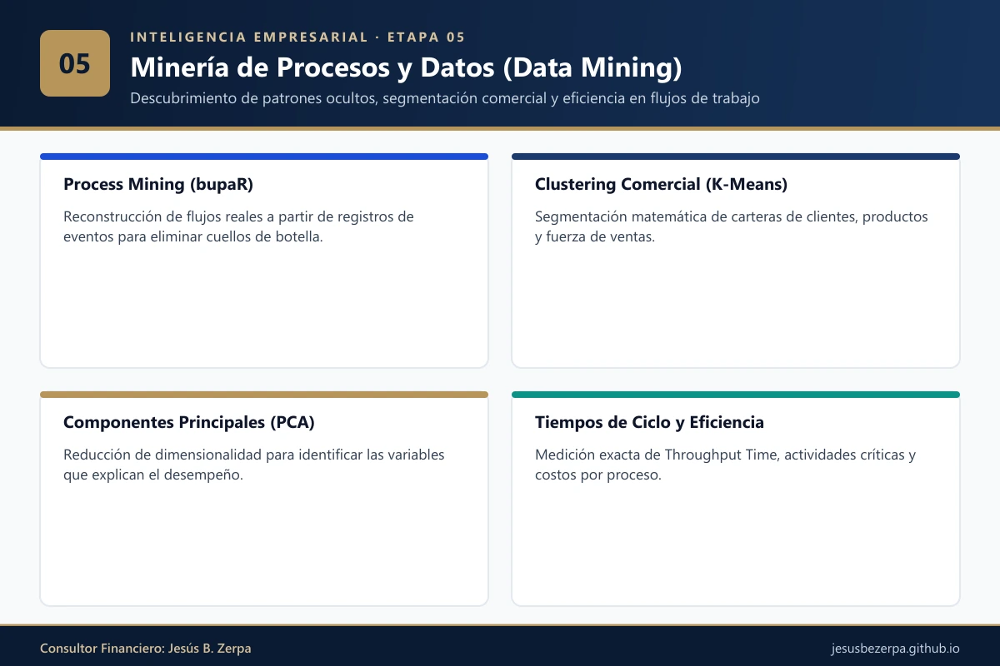
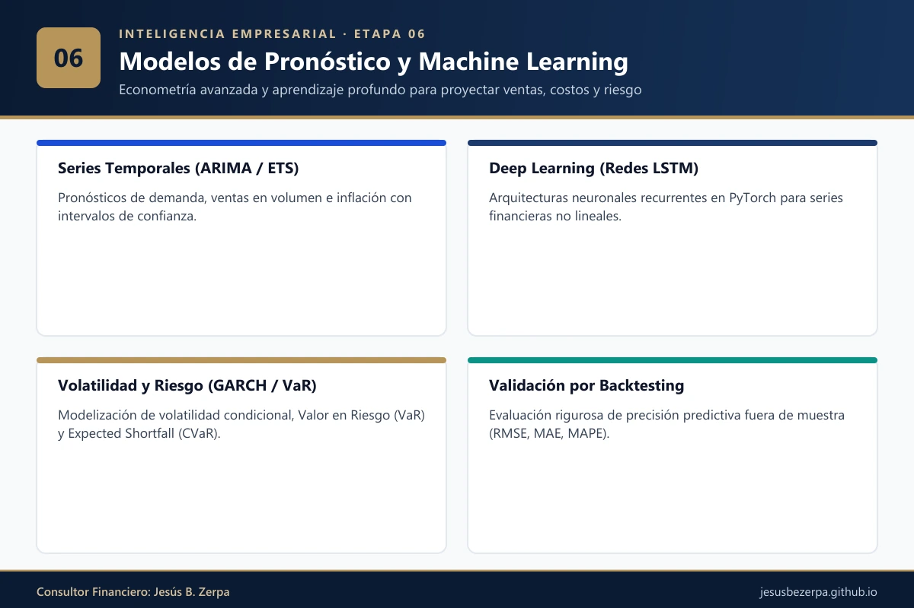
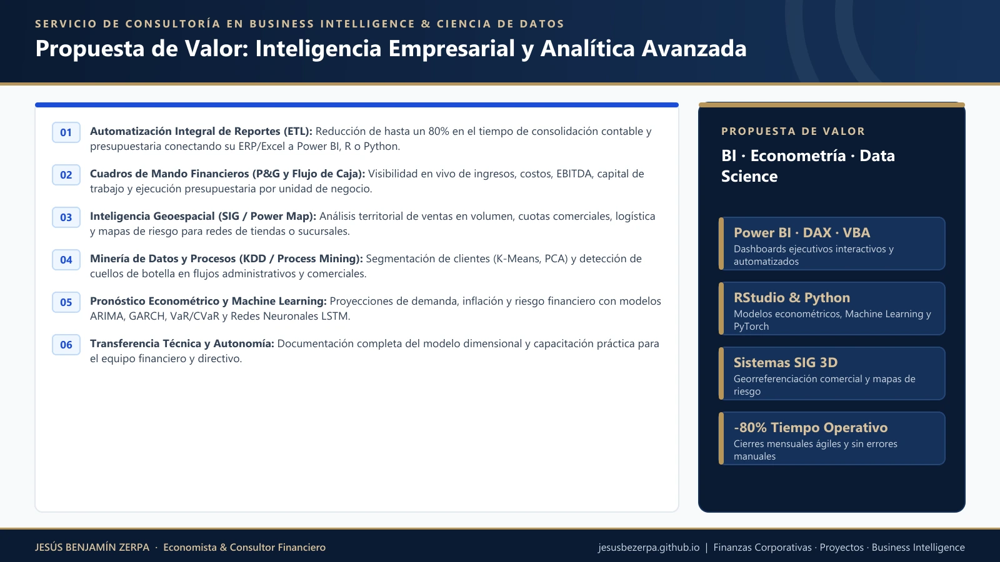

1. De los Datos Dispersos a la Decisión Ejecutiva: ¿Qué es la Inteligencia Empresarial?
Toda empresa en operación genera diariamente miles de registros transaccionales: facturación por producto y sucursal, asientos contables, ejecución presupuestaria, rotación de inventarios, cuentas por cobrar, costos logísticos y tiempos de atención. Sin embargo, en la mayoría de las organizaciones estos datos permanecen fragmentados en múltiples hojas de cálculo y sistemas administrativos aislados, obligando a los equipos de finanzas a invertir días enteros en tareas manuales de consolidación antes de poder analizar un cierre mensual.
La Inteligencia Empresarial (Business Intelligence, BI) resuelve este cuello de botella estructural: comprende el conjunto de arquitecturas de datos, procesos de extracción, transformación y carga (ETL), modelos dimensionales, cuadros de mando interactivos y algoritmos econométricos que convierten los datos brutos de la organización en ventaja competitiva y decisiones en tiempo real.

2. La Evolución Analítica en las Finanzas Corporativas: Descriptiva, Diagnóstica y Predictiva
A diferencia del enfoque contable tradicional —que mira únicamente hacia el pasado—, un ecosistema moderno de Inteligencia Empresarial articula cuatro niveles de madurez analítica:
- Analítica Descriptiva (¿Qué ocurrió?): Automatización de reportes de cierre mensual, Estados de Resultados (P&G) desagregados por unidad de negocio, centro de costo y línea de producto, con indicadores de margen bruto, EBITDA y flujo de caja operativo.
- Analítica Diagnóstica (¿Por qué ocurrió?): Descomposición de variaciones presupuestarias (efecto precio, efecto volumen, efecto mezcla y tipo de cambio), detección de mermas y minería de procesos (Process Mining) para identificar cuellos de botella operativos.
- Analítica Predictiva (¿Qué ocurrirá?): Modelización econométrica de series temporales (ARIMA, SARIMA, ETS, Prophet) y algoritmos de Machine Learning / Deep Learning (Redes Neuronales LSTM) para proyectar ventas en volumen, demanda, inflación y volatilidad.
- Analítica Prescriptiva (¿Qué decisión óptima debemos tomar?): Simulación estocástica de Monte Carlo, optimización matemática de portafolios y evaluación de escenarios de sensibilidad para recomendar la asignación óptima de recursos.

3. Los 6 Módulos de Nuestro Servicio de Inteligencia Empresarial
Diseñamos soluciones a la medida del nivel de madurez tecnológica de cada cliente, desde la automatización inmediata de reportes corporativos hasta el despliegue de modelos predictivos avanzados:

Conexión, limpieza y estandarización automatizada de múltiples fuentes de datos (sistemas contables/ERP, bases SQL, archivos planos y hojas de cálculo) mediante Power Query, R o Python, eliminando el reproceso manual y garantizando una única versión de la verdad.

Definición técnica de indicadores clave de rendimiento (KPIs) financieros, presupuestarios, comerciales y operativos: margen de contribución, EBITDA, punto de equilibrio, rotación de capital de trabajo, ejecución presupuestaria y rentabilidad por cliente o sucursal.

Construcción de tableros de control (Dashboards) interactivos en Microsoft Power BI (modelo estrella y medidas DAX) y en Excel automatizado con Visual Basic (VBA), con navegación multinivel para Juntas Directivas y Gerencias de Finanzas.

Georreferenciación de ventas en volumen, cobertura comercial, mermas y riesgos operativos sobre mapas interactivos (Leaflet en R y Power Map 3D) para optimizar la logística y las metas por región o punto de venta.

Auditoría cuantitativa de flujos de trabajo y registros de eventos (Event Logs) para descubrir rutas críticas, tiempos de ciclo reales (Throughput Time) y cuellos de botella administrativos o comerciales.

Implementación de algoritmos estadísticos y econométricos (SARIMA, ETS, Prophet, VAR, GARCH y Redes Neuronales en R y Python) con validación por Backtesting para proyectar demanda, ingresos, costos y riesgo financiero.

4. Casos Reales y Demostraciones en Nuestro Portafolio Técnico
A diferencia de una consultoría puramente teórica, puedes explorar en vivo varios de los desarrollos de Inteligencia Empresarial y Ciencia de Datos que he diseñado e implementado en entornos corporativos:
📊 Power BI: Cuadros de Mando en la Nube
Dos tableros corporativos interactivos desplegados en vivo en Microsoft Power BI para explorar ventas, costos, márgenes y desempeño regional en tiempo real.
Ver Dashboards en Power BI →💼 Financial Dashboard Corporativo (Excel & VBA)
Cuadro de mando financiero con 4 niveles de desagregación del Estado de Ganancias y Pérdidas (P&G), alertas automáticas y exportación ejecutiva para Vicepresidencia de Finanzas.
Ver Financial Dashboard →🌍 Sistema Integrado Geográfico (SIG 3D)
Modelo geoespacial tridimensional de ventas en volumen y evaluación de riesgos para una red nacional de más de 90 farmacias y tiendas retail.
Ver Caso Geoespacial SIG →🔍 Minería de Procesos y Pronósticos en R/Python
Auditoría de procesos operativos con bupaR y modelos de pronóstico de ventas en volumen con validación por Backtesting.